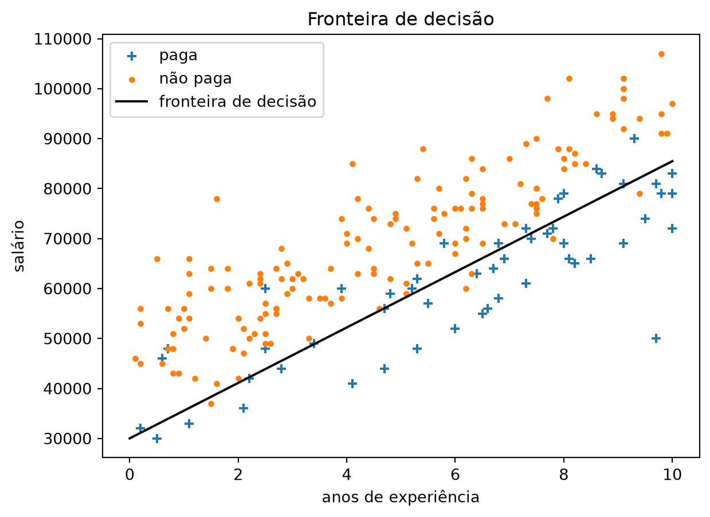
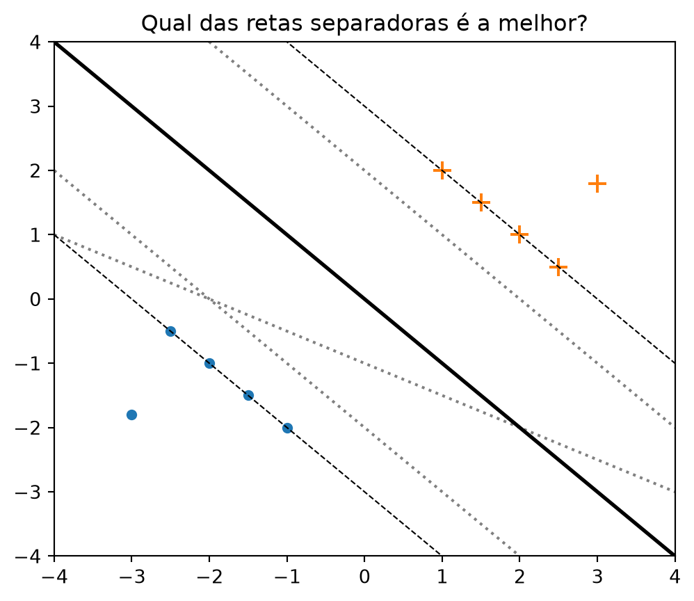
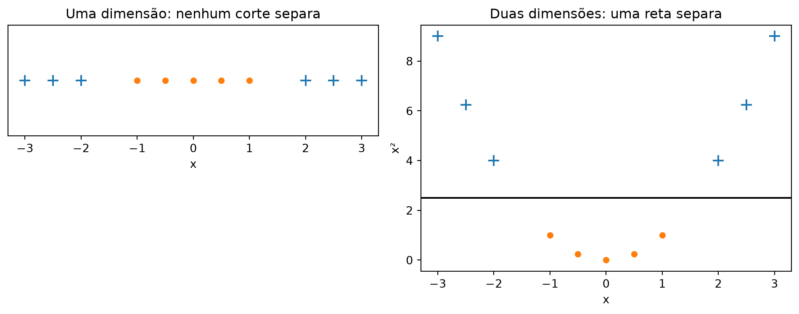

[8.927236932527308, 1.6482026277676034, -0.00028768900920142325]Máquinas de Vetores de Suporte
Nota
Esta seção corresponde a Support Vector Machines, do capítulo 16 de Grus (2019).
O conjunto de pontos onde dot(beta, x_i) vale exatamente 0 é a fronteira entre as nossas duas classes: ali a função logística devolve 0,5, e a decisão vira cara ou coroa. De um lado prevemos “paga”, do outro “não paga”. Vale desenhar essa fronteira para ver com clareza o que o modelo está fazendo.
Os coeficientes abaixo são o beta_unscaled da seção 13.3 — o mesmo ajuste, com a escala desfeita no fim, medido em anos e em reais. É a forma de que precisamos para desenhar a fronteira no plano do gráfico.
A fronteira é beta_unscaled[0] + beta_unscaled[1] * experiência + beta_unscaled[2] * salário = 0. Isolando o salário, ela vira uma reta no plano do gráfico da seção 13.1:
b0, b1, b2 = beta_unscaled
def salario_na_fronteira(experiencia: float) -> float:
return -(b0 + b1 * experiencia) / b2
experiencia = [x[1] for x in xs]
salario = [x[2] for x in xs]
plt.scatter([e for e, y in zip(experiencia, ys) if y == 1],
[s for s, y in zip(salario, ys) if y == 1],
marker='+', label='paga')
plt.scatter([e for e, y in zip(experiencia, ys) if y == 0],
[s for s, y in zip(salario, ys) if y == 0],
marker='.', label='não paga')
grade = [0, 10]
plt.plot(grade, [salario_na_fronteira(e) for e in grade],
color='black', label='fronteira de decisão')
plt.xlabel("anos de experiência")
plt.ylabel("salário")
plt.legend(loc='upper left')
plt.title("Fronteira de decisão")
plt.show()
errados = sum(1 for x, y in zip(xs, ys)
if (dot(beta_unscaled, x) >= 0) != (y == 1))
print(f"{errados} dos {len(xs)} usuários ficam do lado errado da fronteira")21 dos 200 usuários ficam do lado errado da fronteiraA reta atravessa a nuvem na diagonal, subindo da esquerda para a direita: abaixo dela fica quase todo mundo que paga, acima quase todo mundo que não paga. É a região de “experiência alta, salário baixo” que a seção 13.1 já tinha identificado a olho nu, agora com um contorno. Vinte e um dos 200 usuários ficam do lado errado dela.
Essa fronteira é um hiperplano que corta o espaço de atributos em dois semiespaços — em duas dimensões, uma reta; em três, um plano; em mais, algo que não dá para desenhar mas que se comporta igual.
E note como ela apareceu: de brinde. Nós não pedimos uma fronteira; pedimos o \(\beta\) que maximiza a verossimilhança dos dados sob o modelo logístico. O hiperplano é um efeito colateral desse pedido.
A pergunta que abre esta seção é: e se a fronteira fosse o pedido principal?
AvisoEspaço de atributos, não espaço de parâmetros
Neste ponto é fácil trocar um espaço pelo outro, porque os dois têm três dimensões neste problema. Vale separá-los com cuidado.
- O espaço de atributos é onde os dados moram: cada ponto é um usuário, \((1, \text{experiência}, \text{salário})\). É o plano da figura logo acima. A fronteira é o conjunto \(\{\mathbf{x} : \beta \cdot \mathbf{x} = 0\}\) — um conjunto de x, portanto um objeto deste espaço.
- O espaço de parâmetros é onde mora o \(\beta\): cada ponto dele é um modelo candidato inteiro. Foi por ele que o gradiente descendente caminhou na seção 13.3 — os 5.000 epochs são uma trajetória aqui, não ali —, e é sobre ele que se desenha a superfície de perda do Capítulo 5.
O que gera a confusão é uma simetria real: \(\beta \cdot \mathbf{x} = 0\) define um hiperplano nos dois espaços, dependendo de qual dos dois vetores você segura fixo. Com \(\beta\) fixo e \(\mathbf{x}\) variando, sai a fronteira de decisão. Com um \(\mathbf{x}\) fixo e \(\beta\) variando, sai o conjunto de todos os modelos que consideram aquele usuário exatamente limítrofe — um objeto legítimo e útil, mas que não é o que está desenhado no gráfico.
A troca é de vocabulário, e nem por isso é inofensiva: quem embaralha os dois espaços não tem como entender por que multiplicar \(\beta\) por 2 muda o modelo sem mover um milímetro da fronteira. É precisamente o que acontece no callout mais abaixo, sobre dados separáveis.
O critério da margem
A ideia da máquina de vetores de suporte (support vector machine, ou SVM) é essa. Em vez de estimar probabilidades e deixar a fronteira aparecer no fim, ela procura diretamente o hiperplano que melhor separa as classes nos dados de treino — e “melhor” tem uma definição precisa: o hiperplano que maximiza a distância até o ponto mais próximo de cada classe. Essa distância se chama margem, e os pontos que a tocam são os vetores de suporte que dão nome ao método.
Por que isso é um critério, e não só uma preferência estética? Porque, quando as classes são separáveis, existem infinitos hiperplanos que classificam o treino sem erro nenhum, e eles não são equivalentes num conjunto de teste:
classe_a = [(-2.0, -1.0), (-1.0, -2.0), (-1.5, -1.5), (-2.5, -0.5), (-3.0, -1.8)]
classe_b = [(2.0, 1.0), (1.0, 2.0), (1.5, 1.5), (2.5, 0.5), (3.0, 1.8)]
fig, ax = plt.subplots(figsize=(6, 5))
ax.scatter([p[0] for p in classe_a], [p[1] for p in classe_a], marker='.', s=90)
ax.scatter([p[0] for p in classe_b], [p[1] for p in classe_b], marker='+', s=90)
grade = [-4.0, 4.0]
# três separadoras válidas, mas desnecessariamente próximas de algum ponto
for a, b in [(-1.0, -2.0), (-1.0, 2.0), (-0.5, -1.0)]:
ax.plot(grade, [a * x + b for x in grade], ':', color='gray')
# a de margem máxima, com as duas linhas que a margem toca
ax.plot(grade, [-x for x in grade], '-', color='black', linewidth=2)
ax.plot(grade, [-x - 3 for x in grade], '--', color='black', linewidth=0.8)
ax.plot(grade, [-x + 3 for x in grade], '--', color='black', linewidth=0.8)
ax.set_xlim(-4, 4)
ax.set_ylim(-4, 4)
ax.set_title("Qual das retas separadoras é a melhor?")
plt.show()
As quatro retas acertam todos os pontos de treino: as três pontilhadas cinzas e a cheia preta classificam este conjunto sem um erro sequer. A diferença está na folga. A reta cheia é a que fica mais longe dos pontos mais próximos de cada lado, e as duas tracejadas finas marcam onde a margem dela encosta — nos quatro pontos de cada classe que são, por definição, os vetores de suporte. As pontilhadas passam a cerca de um terço dessa distância de algum ponto de treino.
A intuição é que um ponto novo, que caia um pouco fora do padrão do treino, tem mais chance de continuar do lado certo se a fronteira estiver o mais afastada possível de todo mundo.
ImportanteO critério da margem não é o critério da verossimilhança
Esta é a diferença que importa entre os dois métodos, e ela tem duas faces.
A primeira: quais pontos importam. A log-verossimilhança negativa que a seção 13.2 construiu soma uma parcela por ponto — todos os pontos, inclusive os que estão longe e do lado certo. Um usuário para quem o modelo prevê probabilidade 0,999 e que de fato paga ainda contribui com uma perda pequena, mas positiva, e o gradiente ainda tem um termo para ele. Mover esse usuário para ainda mais longe da fronteira melhora a verossimilhança e desloca o \(\beta\) ajustado. Já a margem máxima depende apenas dos pontos mais próximos: mover um ponto distante não muda o hiperplano da SVM em coisa nenhuma, porque ele não é um vetor de suporte.
A segunda: em dados separáveis, a verossimilhança não tem máximo. Este é o caso em que a diferença deixa de ser filosófica. Se existe um hiperplano que separa as classes perfeitamente, então multiplicar \(\beta\) por 2 empurra todas as probabilidades corretas ainda mais para perto de 0 ou 1 e reduz a log-verossimilhança negativa. Multiplicar por 4 reduz mais. Não existe um \(\beta\) ótimo: existe uma direção ótima e um comprimento que cresce para sempre.
Dá para ver isso acontecendo — nos mesmos pontos da figura acima, menos o mais afastado de cada classe, para caber em duas linhas de código:
import math
from scratch.logistic_regression import negative_log_likelihood
xs_sep = [[1.0, -2.0, -1.0], [1.0, -1.0, -2.0], [1.0, -1.5, -1.5], [1.0, -2.5, -0.5],
[1.0, 2.0, 1.0], [1.0, 1.0, 2.0], [1.0, 1.5, 1.5], [1.0, 2.5, 0.5]]
ys_sep = [0, 0, 0, 0, 1, 1, 1, 1]
random.seed(0)
beta_sep = [random.random() for _ in range(3)]
marcos = [1, 10, 100, 1000, 10000, 50000]
for epoch in range(1, max(marcos) + 1):
gradiente = negative_log_gradient(xs_sep, ys_sep, beta_sep)
beta_sep = gradient_step(beta_sep, gradiente, -0.01)
if epoch in marcos:
norma = math.sqrt(dot(beta_sep, beta_sep))
perda = negative_log_likelihood(xs_sep, ys_sep, beta_sep)
print(f"epoch {epoch:>6}: |beta| = {norma:8.4f} perda = {perda:.6f}")epoch 1: |beta| = 1.2248 perda = 1.438494
epoch 10: |beta| = 1.3448 perda = 0.939585
epoch 100: |beta| = 1.9065 perda = 0.193343
epoch 1000: |beta| = 2.8378 perda = 0.021253
epoch 10000: |beta| = 3.8695 perda = 0.002178
epoch 50000: |beta| = 4.6111 perda = 0.000439O comprimento de \(\beta\) cresce sem parar e a perda desce em direção a zero sem nunca chegar. O gradiente descendente não “converge” aqui — ele apenas anda cada vez mais devagar, e para onde estava quando você mandou parar. O modelo que você obtém é uma função de quantos epochs você teve paciência de rodar, o que é uma forma desconfortável de escolher um modelo.
É por isso que o LogisticRegression do scikit-learn liga a regularização de fábrica, como o callout da seção 13.3 mencionou: a penalidade sobre o tamanho de \(\beta\) é o que impede essa fuga para o infinito. A máquina de vetores de suporte não precisa desse remendo — o critério de margem já é uma restrição sobre o tamanho do vetor, embutida na definição do problema.
Quando não existe hiperplano separador
Encontrar o hiperplano de margem máxima é um problema de otimização com restrições, e as técnicas que o resolvem estão fora do alcance deste livro — é por isso que esta seção não implementa a máquina de vetores de suporte, e é a única do capítulo que deixa de implementar o seu próprio assunto.
Mas há um problema anterior e mais interessante: um hiperplano separador pode simplesmente não existir. É o caso destes dados. Não é uma impressão vinda do gráfico; dá para verificar por busca exaustiva.
def separavel(pontos, rotulos) -> bool:
"""Existe alguma reta que separe perfeitamente as duas classes?"""
n = len(pontos)
for i in range(n):
ax, ay = pontos[i]
for j in range(i + 1, n):
bx, by = pontos[j]
dx, dy = bx - ax, by - ay
# direção do segmento, e a perpendicular a ele
for wx, wy in [(dx, dy), (dy, -dx)]:
if wx == 0 and wy == 0:
continue
proj0 = [wx * px + wy * py
for (px, py), r in zip(pontos, rotulos) if r == 0]
proj1 = [wx * px + wy * py
for (px, py), r in zip(pontos, rotulos) if r == 1]
if max(proj0) < min(proj1) or max(proj1) < min(proj0):
return True
return False
pontos = [(x[1], x[2]) for x in xs]
if separavel(pontos, ys):
print("Existe uma reta que separa pagantes de não pagantes.")
else:
print("Nenhuma reta separa estes dados.")Nenhuma reta separa estes dados.
Nota
Por que testar só direções ligadas a pares de pontos basta, e a busca é exaustiva apesar de finita: se as duas classes são separáveis no plano, os fechos convexos delas são disjuntos, e o segmento mais curto entre os dois fechos define a direção de separação. Esse segmento ou liga dois vértices — um de cada classe, e a direção é a do próprio segmento — ou liga um vértice a uma aresta, e aí a direção é perpendicular a essa aresta, que por sua vez liga dois pontos da mesma classe. Percorrer todos os pares nas duas formas cobre os dois casos. São 19.900 pares e menos de um segundo de execução.
Não há reta nenhuma que separe pagantes de não pagantes neste conjunto. A SVM, na forma acima, não teria o que devolver.
O truque do kernel
Às vezes dá para contornar isso transformando os dados num espaço de dimensão maior. Considere o conjunto unidimensional mais simples possível em que nenhum ponto de corte funciona:
valores = [-3.0, -2.5, -2.0, -1.0, -0.5, 0.0, 0.5, 1.0, 2.0, 2.5, 3.0]
rotulos = [1 if abs(v) >= 2 else 0 for v in valores]
fig, (esquerda, direita) = plt.subplots(1, 2, figsize=(10, 4))
for marcador, classe in [('+', 1), ('.', 0)]:
selecionados = [v for v, r in zip(valores, rotulos) if r == classe]
esquerda.scatter(selecionados, [0] * len(selecionados), marker=marcador, s=90)
direita.scatter(selecionados, [v ** 2 for v in selecionados],
marker=marcador, s=90)
esquerda.set_yticks([])
esquerda.set_ylim(-1, 1)
esquerda.set_box_aspect(0.3) # o painel da esquerda é uma reta, não um plano
esquerda.set_anchor("N")
esquerda.set_xlabel("x")
esquerda.set_title("Uma dimensão: nenhum corte separa")
direita.axhline(2.5, color='black')
direita.set_xlabel("x")
direita.set_ylabel("x²")
direita.set_title("Duas dimensões: uma reta separa")
plt.tight_layout()
plt.show()
À esquerda, uma classe ocupa as duas pontas da reta e a outra ocupa o meio. Não existe ponto de corte que resolva: qualquer corte único deixa exemplos da classe das pontas dos dois lados. À direita, o mesmo conjunto depois de enviar cada ponto \(x\) para o par \((x, x^2)\). Nada foi inventado — a segunda coordenada é uma função da primeira, calculada a partir dela —, mas agora a reta horizontal \(y = 2{,}5\) separa perfeitamente.
Isso normalmente é chamado de truque do kernel, e o “truque” está numa economia. Mapear de fato todos os pontos para o espaço de dimensão maior pode ser caro — ou impossível, se o espaço tiver dimensão infinita, o que acontece com alguns kernels usados na prática.
Acontece que o algoritmo da SVM só precisa dos produtos escalares entre pares de pontos, nunca das coordenadas individuais. Uma função de kernel calcula esses produtos escalares no espaço maior direto a partir das coordenadas originais, sem nunca construir os vetores transformados. Você ganha a fronteira curva sem pagar o custo da dimensão.
É o que a SVM compra, e é a razão de ela ter dominado a classificação durante uma década, antes das redes neurais: fronteiras não lineares com um problema de otimização que continua convexo — logo, com solução única, sem mínimos locais e sem dependência do ponto de partida. Compare com o Capítulo 15, onde a não linearidade vem de outro jeito e custa exatamente essas garantias.
Usar máquinas de vetores de suporte sem depender de software de otimização especializado, escrito por quem tem o preparo para isso, é difícil e provavelmente não é uma boa ideia — e é aqui que Grus (2019) encerra o tratamento do assunto. Este livro faz o mesmo: esta é a única seção do capítulo sem uma implementação do zero, e a razão não é falta de espaço. É que a implementação honesta seria um algoritmo de programação quadrática com restrições, e escrever um não ensinaria nada sobre classificação.
O que este capítulo deixa
Três capítulos, uma escada, e o degrau de cima é este. A seção 11.1 ajustou uma reta com uma fórmula fechada — duas médias, uma covariância, uma variância, sem laço nenhum. O Capítulo 12 manteve a fórmula fechada existindo e parou de usá-la: a solução exata era um sistema linear que aquele capítulo escolheu não resolver, por escopo. Aqui ela não existe, e a promessa da seção 5.5 foi cobrada — o gradiente descendente deixou de ser conveniência e virou a única via até um modelo. É assim também nos capítulos 15 e 16 — mas não em todo o resto: os capítulos 14 e 17 constroem modelos que não descem gradiente nenhum, como o Capítulo 5 já avisava.
Há uma segunda herança, e ela só ficou visível na figura desta seção. Os três modelos da escada, mais a máquina de vetores de suporte, decidem todos comparando dot(x, beta) com um limiar — e produto escalar contra limiar é, sempre, um hiperplano no espaço de atributos. Uma reta, no nosso caso. Os 21 usuários do lado errado dela não estão lá por falta de epochs de treino: estão lá porque nenhuma reta os colocaria do lado certo. O truque do kernel é uma saída para isso, e uma saída cara — ele compra a curvatura trocando o espaço, sem abandonar o produto escalar, e paga com um custo que cresce entre o quadrado e o cubo do número de pontos, e com uma fronteira que ninguém mais consegue ler.
O Capítulo 14 chega à curvatura por um caminho que não tem nada disso. A árvore de decisão não tem produto escalar, não tem coeficiente, não tem gradiente e não tem ponto de partida aleatório; ela pergunta uma coisa de cada vez — “salário acima de 60.000?” — e a fronteira que sai é feita de degraus paralelos aos eixos. Uma consequência disso fecha justamente a lição da seção 13.3: para uma árvore, medir salário em reais ou em desvios padrão é rigorosamente indiferente. Reescalonar não muda uma única pergunta que ela faça, porque toda pergunta é sobre a ordem dos valores de uma coluna, e reescalonar preserva a ordem. O ValueError da primeira conta, a saturação em float64, a taxa de aprendizado que serve para uma coluna e não para a outra — nada disso existe no próximo capítulo. Some o problema inteiro, junto com o produto escalar que o criava.
DicaNa prática:
scikit-learn
O scikit-learn traz máquinas de vetores de suporte em sklearn.svm, e a escolha entre as classes importa:
from sklearn.svm import SVC, LinearSVC
modelo = SVC(kernel='rbf', C=1.0) # com kernel; fronteira não linear
modelo = LinearSVC(C=1.0) # sem kernel; muito mais rápidoSVC é a implementação com kernel, e por baixo dela roda o LIBSVM, exatamente o software especializado que a citação acima diz que você deveria usar. O kernel='rbf' (radial basis function) é o padrão e corresponde a um espaço de dimensão infinita — o caso extremo em que mapear os pontos de verdade seria literalmente impossível e só o truque do kernel torna a conta viável.
Três coisas que valem a pena saber:
Cé o mesmo tipo de hiperparâmetro da regularização da seção 12.8. Como dados reais quase nunca são separáveis — os nossos não são —, a formulação usada na prática é a de margem suave, que permite alguns pontos violarem a margem e cobra por isso.Cé quanto se cobra.- Reescalonar não é opcional. A margem é medida com distância euclidiana, então uma coluna em reais e outra em anos produzem o mesmo desastre que a seção 13.3 mostrou — aqui sem
ValueError, só com um modelo silenciosamente dominado pela coluna de escala maior. O guia prático do LIBSVM começa por essa recomendação. SVCnão escala para dados grandes. O custo do treino cresce entre o quadrado e o cubo do número de pontos, o que na prática limitaSVCa algumas dezenas de milhares de exemplos. Acima disso usa-seLinearSVC(sem kernel) ouSGDClassifier, que aplica a mesma perda de margem por gradiente descendente estocástico — o método do Capítulo 5, de volta pela última vez neste capítulo.
E vale registrar a diferença de interface que resume a diferença de critério: SVC não tem predict_proba habilitado por padrão. Ele devolve o lado do hiperplano, não uma probabilidade, porque nunca modelou uma. Obter probabilidades dele exige uma calibração extra por cima, e o scikit-learn acabou de mudar como se pede isso: o parâmetro SVC(probability=True) foi depreciado na versão 1.9 e será removido na 1.11, em favor de
from sklearn.calibration import CalibratedClassifierCV
modelo = CalibratedClassifierCV(SVC(), ensemble=False)A troca melhora o nome, porque agora a classe diz o que faz — antes, um parâmetro booleano escondia um segundo modelo ajustado por baixo. E a ironia sobrevive intacta: essa calibração ajusta uma regressão logística sobre as saídas da SVM. O método que este capítulo construiu volta no fim como remendo, para dar à máquina de vetores de suporte a probabilidade que o critério de margem se recusou a modelar.
Grus, Joel. 2019. Data Science from Scratch: First Principles with Python. 2nd ed. O’Reilly Media.